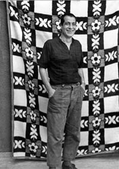
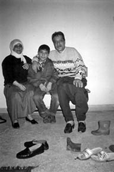
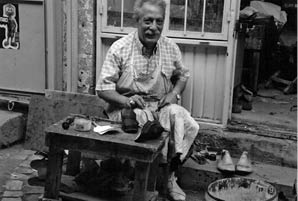

“Kürt Özgürlük Hareketinin Kurulduğu Yer Diyarbakır Toplama Kampıdır.”
Mahmut Balpetek21
En büyük ağabeyim Ramazan Balpetek 1971’de TİKKO davasından yakalandı. İbrahim Kaypakkaya, Muzaffer Oruçoğlu ile aynı davadan Diyarbakır Cezaevi’nde yattı, idamla yargılandı. 1974’te Ecevit affıyla cezaevinden çıktı. 1979 yılında tekrar aranmaya başladı. 1984’e kadar 5 yıl kaçak durumuna düştü. 1984’te yakalandı. 12 Eylül döneminde de idam cezasıyla yargılandı ama sonra PKK davasında örgüte yardım ve yataklıktan yattı.
Mahmut isimli Siverek kaymakamının şoförü, 12 Mart’ta İbrahim Kaypakkaya, Muzaffer Oruçoğlu ve bazı ilişkileri deşifre etmiş,

Ramazan Balpetek
ihbarcı biriydi, MİT’le çalıştığı söyleniyordu. O zamandan beri Siverek’teki aileler ve tutuklular nezdinde bu adam ihbarcıydı ve dışlanmıştı. Dolayısıyla da 12 Eylül gelmeden belli tehditler almış olacak ki, savcılığa gitmiş. Ölmesi durumunda bunun sorumlusunun Ramazan Balpetek olduğunu belirten bir dilekçe yazmış. Ağabeyim 1974’te cezaevinden çıktıktan sonra 1976’da Türkiye İşçi Partisi’ne geçti. Önce TİP ilçe sekreteri sonra ilçe başkanı oldu. Mahmut denilen o adam öldürüldü, ölümünün PKK davasıyla ilgisi vardı. Dolayısıyla ağabeyim de PKK’li olmadığı halde 1984’te yakalanıp PKK’nin ana davasından yargılandı. Bu süreçte avukatlar ve biz ilgilenmeye başladık davayla. Öldürülen şahsın eşi, öldürenlerin 18 ve 20 yaş arasında olduğunu tarif ediyor, eşkâl veriyor; fakat eşkâl ve yaş ağabeyime uymuyordu. Ağabeyim o dönemler 30 yaşını geçmiş olgun bir insandı. Ama tabii o dönem Diyarbakır Cezaevi’ne düşmek, mahkemeye gidip gelmek, yani kimliksiz bile gitmek 6-7 ay yatmayı gerektiriyordu. Her yer kalabalık ve mahkemeler insanların toplama kampı gibi olduğu ve insanlar ölüme terk edildikleri için çok da önemsemiyorlardı. Cezaevinden çıkmak için suçsuz olmanız yetmezdi. Ağabeyim 2.5 yıl yattı, 2.5 yılın ardından tahliye oldu, 1987 başları gibi çıktı. Çünkü asıl öldürenler ortaya çıktı, biz öldürdük, dediler. Zannediyorum daha sonra gerilla olarak dağda öldürülen Yılmaz Uzun, üstlenenlerden biri oldu. Onlar yapmıştı gerçekten. Ağabeyim 1987’de çıktıktan sonra, 1989’da tekrar içeri alındı. Önce Urfa Cezaevi sonra Hilvan Cezaevi’nde de 2 yıl yatarak tahliye edildi. Bu kez beraat ettiği halde AİHM’e gitmesin diye örgüte yataklıktan ceza aldı. Ağabeyim 1990’lı yılların başında da Hilvan’dan bırakıldı. Unutmamak gerekir ki kendisi yasal bir partinin yöneticisiydi, ilçe başkanıydı.
Ailem, ağabeylerimin hepsi solcuydu. Bir ağabeyim Genç Öncü ilçe başkanı, o zaman Türkiye İşçi Partisi’nin gençlik örgütüydü. Biri İşçi Kültür Derneği başkanıydı, sadece ablam siyaseten aktif değildi ama o da yine aileden dolayı siyasetle ilgiliydi. Öyle bildiğimiz anlamda aktif siyasi bir şahıs değildi ama bütün ailesinin solcu olması nedeniyle ilgileniyordu, yardım ediyordu, onların sorunlarıyla uğraşıyordu.
Cezaevi Süreci
Ağabeyimin Diyarbakır Cezaevi’ne girmesiyle aslında aile için çok şey değişti. Yakalanmadan önce köylerde saklanıyordu. Ancak, asker baskınları nedeniyle köylerde de barınamaz hale gelmişti. Dolayısıyla İstanbul’a kaçmayı başardı. Birkaç yıl İstanbul’da kaldıktan sonra tekrar Siverek’e döndü. Siverek’te de yakalandı. Arandığı dönemde her gün evimize baskın yapılıyordu. Mesela şöyle bir anım var. Hüseyin Kocadağ, Siverek’e Emniyet Müdürü atandı. Ben lise 1’deyim. Ağabeyimi gözaltına almak için yerini öğrenmek istiyorlardı. Bu işte de en zayıf halka anne, baba ve en küçük kardeşlerdir. Onları götürüp işkence yapıp ya da birkaç gün tutup aranan kişinin bunu haber alıp kendisinin gelmesi ya da işkenceyle, biliyorlarsa yerini aileye söyletme yöntemine başvuruyorlardı. Bir akşamüzeriydi, okuldan döndüm, evimizi polis sardı. Geldiler beni almaya, ben de 14 yaşındayım, 1981’in başı. Annem anadilimiz olan Zazaca bunlardan korkma dedi, dayanırsan bir şey yapamazlar sana, sonra da onlara hakaret eden laflar söyledi. Ama Kocadağ’ın arabanın içinde olduğunu ve Zazaca bildiğini bilemezdi. Sonra Kocadağ döndü bana “Annen sana ne dedi?” diye sordu. Ben hemen yanıtladım. Annem “O ağabeyler onlardan korkma!” diyor dedim. Annem de aynısını tekrarladı ama Kocadağ, annemin ne dediğini anladığı için daha sonra götürüldüğümde bizzatihi kendisi bana işkence yaptı.
Bu baskınlar sık sık devam ediyordu. Biz mimliydik artık. Bir yerde oturamazdık, sokakta bir yerden geçtiğimizde jandarma, asker kimliğimize baktığında ya tartaklıyorlardı ya da götürüyorlardı. Her hafta beni götürürlerdi İstiklal Marşı’nı okumadın diye. Biz İstiklal Marşı okurken, bir komutan çıkardı yüksek bir yere, 500 kişi varsa kendince “Sen, sen, sen, toplayın bunları” derdi. “Bunlar İstiklal Marşı okumadı!” diye alıp götürülürdük. Burada da konu döner dolaşır ağabeyimin nerede olduğuna, ağabeyimin silahlı olup olmadığına, nerelerde dolaştığına gelirdi ve ağır işkenceler görürdük. Tabii işkencenin ağırlığını o yaştaki pozisyonumuza göre, o yaş durumuma göre söylüyorum. Ben olmasam annemi alıyorlardı, ağabeylerimi alıyorlardı. İş hayatı tamamıyla kapalıydı bize. Çünkü bir yerde düzenli çalışamazsın, gelip gözaltına alıyorlar. Hiçbir işveren de düzenli gözaltına alınan birine iş vermezdi. Bu, birçok aileyi, bizi ve yakın akrabalarımızı ve komşularımız olan solcu aileleri orta halli ekonomiden ekmeğe muhtaç hale getirdi. Çünkü bir de bunlara, içeridekilere görüşe gitmek, onlara para yetiştirmek, sonra bunları şehir şehir dolaştırmaları da eklenince birçok insan varolan üretim araçlarını ya da mülklerini satarak bunu sürdürmeye, onları takip etmeye çalıştılar. İçeridekilerle bağ kurmanın bedelini böyle ödemiş oldular.
Babam 1975’te, ağabeyimin birinci tutukluluğunun ardından öldü. Babam öldükten sonra ağabeylerim imece usulü çalışıyorlar ve evi geçindiriyorlardı. Terzi dükkânı vardı birkaç ağabeyimin, bir ağabeyim soğuk demirci, inşaatlarda çalışıyordu. Annem pamuğa giderdi, biz de giderdik pamuk tarlalarında çalışmaya. Şimdi fındık işi var, o zaman da Çukurova’ya ve Söke Ovası’na pamuk toplamaya giderdik. Böylece yaşamımızı idame ettirmeye çalışırdık. Ağabeyim içeri girdiğinde bu daha da zorlamış oldu ekonomimizi, onun da 4-5 çocuğu vardı. Bu çocuklara da dayanışma içinde aile baktı.
Dolayısıyla darbeden önceki hayatımızla darbeden sonraki hayatımız arasında keskin bir çizgi var. Hem sosyal hem ekonomik anlamda; ayrıca eğitim yaşantımızda çok keskin bir çizgi görüyorum. Darbe öncesinde Siverek’te çok hoş bir ortam vardı. Tabii son dönemde bir savaş hali başlamıştı ama bizim sosyal yaşamımız, ekonomik yaşamımız, aile yaşamımız çok sıradan, normal Türkiyeli aile gibiydi. 12 Eylül’den sonra annem evde yatmamaya çalışıyordu, gözaltına alabilirler diye, ağabeylerim kaçıyordu. Ben okulda tedirgindim, bir şekilde fişleniyordum ve üstüne üstlük de sınıf başkanıydım. Bizim Milli Güvenlik dersine giren alay komutanı, subaylar gelip giriyordu o dönem liselere, onların nezdinde de artık sorunlu bir tiptim. Bu da beraberinde bir dışlanmayı getiriyordu. Benimle konuşan arkadaşları sorguya alıyorlardı, ne yapıyor, nereye gidiyor diye. Dolayısıyla bir anlamda da toplumdan izole ediliyorsun, yalıtılıyorsun. Arkadaşların seninle konuşmaktan imtina eder hale geliyor. Çünkü zarar görüyorlar. Bu aile yaşamı için de öyle. Teyzelerim bile bize gelmeye çekinir oldular. Her an ev basılabilir ve teyzelerimi de götürebilirler diye. Böyle bir şey vardı. Çekirdek aile olarak bile kalamıyorduk bazen. Bir ağabeyim 1 ay, 5 ay gelmiyordu mesela.
Hapishane Görüşleri...
Ağabeyim içeri girdikten sonraki ilk görüşmemizi çok iyi hatırlıyorum. Ağabeyim, adeta bir deri bir kemiğe dönmüştü. Saçları, bıyıkları kesilmiş tek tip elbise içinde, ilk bakışta tanımayacağım kadar değişmişti. Önceden bilgi aldığım için ima gibi anlaşılacak sözlerden sakındım. Böyle bir ortamın bende yarattığı baskı, sadece karşılıklı “nasılsın iyi misin” sorularının ardından aile fertlerinin tek tek iyi olduğunu söylemekle devam etti. Ağabeyim de sık sık cezavinde iyi olduklarını söyledi. Aslında bir diyalog değil, sınırlı sayıdaki sözcüklerle yapılmış bir usul konuşmasıydı demek mümkündü. Diyarbakır Cezaevi’ne cezaevi demek çok hafif kalır, toplama kampıydı. Cezaevinde görüş sabah saat 9’da başlayacak, bilerek saat 5’te herkesin orada olmasını istiyorlar. Sayıyorlar, 60 kişi, 100 kişi, 300 kişi. Ondan sonra o yaşlı kadınlar ve bizler, saat 5’ten itibaren bekliyorduk, yazın güneşin altında Diyarbakır sıcağında ya da kışın ayazında, karın altında sıra bekliyorsun. Sonra saat 8 gibi kapıda vücudun çeşitli yerlerine ilk mühür vuruluyor. Yeniden sıraya giriyorsun, İstiklal Marşı okutuluyor ve uzun bir seremoniden sonra görüş yerine gidiyorsun. Görüş yerinde anne babalar pek konuşamazdı onun için gidemezdiler, onların yerine Türkçe bilen erkek ya da kız çocukları daha fazla gidiyordu. Çünkü Türkçe dışında bir dil konuşulması yasaktı. Bu sebeple yıllarca annesiyle görüşmemiş çok insan vardı. Anneler ya da babalar Türkçe bilmiyorlar. Görüşte yanlışlıkla anne veya baba Zazaca bir kelime ya da Kürtçe bir kelime kullandığında, büyük bir çoğunlukla içerideki çok ağır işkenceler görüyordu. Anne baba da sürüklenerek geri çıkarılıyordu. Hem tutuklunun hem de sizin yanınızda, sağınızda solunuzda ikişer jandarma var. Karşılıklı bakıyorlar, hafif bir imalı söz, kendilerine göre imalı saydıkları bir ifade için bile görüşü iptal edip karşınızda, tutukluya işkence yapa yapa götürüyorlardı. Buradaki asıl maksat tutukluyla yakınlarının görüşmesini engellemekti. Çünkü biz gittiğimizde “Ne geliyorsunuz bu katilleri görmeye, siz insan mısınız?” diye aşağılayarak ve hakaret ederek gelmememiz için ne gerekiyorsa yapıyorlardı. Bunun için zaman zaman şu veya bu basit nedenlerden dolayı tutuklu yakınlarını da gözaltına alıyorlardı. Bir ay, iki ay içeride tutuyorlardı bir daha gelmesin, o bile riskli olsun diye. Onun için de Türkçe bilen anneler çok önemli oluyordu. Sonuçta baba ya da erkekler tutuklanmayı göze alamadığı için çok uzakta duruyor, evin geçimini sağlıyorlardı. Kadınlar, anneler ve özellikle de kız kardeşler, tutuklansalar da yeni bir ekonomik tahribe neden olmayacağı için çocuklarının ve kardeşlerinin peşinde daha fazla dolaştılar. Daha aktif rol oynadılar ve kısa bir süre içerisinde de kurdukları ağla, dayanışma ve haberleşmeyle bir tutuklu aileleri hareketine dönüştürdüler.
Hiç Unutamadığım Bir An...
Uzun bir koridordan Diyarbakır Cezaevi’nde görüşe gidiyorduk, birden görüş yerinde bir bağırtı duydum, yaşlı bir kadının dişleri dökülmüştü, dipçik vurulmuştu. Jandarmaya göre içeriye bir haber yolladığı söyleniyordu, kadın yaka paça alındı. 70 yaşlarında gibiydi o zaman, tahminen söylüyorum. Sonra o kadının gözaltına alındığını duydum. 1-1.5 ay cezaevinde kaldıktan sonra çıktı. Kısa bir süre sonra ölmüştü. Yapılanları yediremediği için girdiği stresten ölmüştü. Böyle birçok şey gördüm ama bu çok etkileyiciydi; dişleri dökülmüş vaziyette, yediği dipçikten dolayı ağzı kan içinde.
Sürecin Etkileri...
Ağabeyimle aramda 21 yaş var. Onunla başlayan bu süreç, beni olduğumdan daha fazla politize etti, daha fazla kinlendirdi. Ağabeyim zaten aileyi ve Siverek’in önemli bir kısmını solcu yapmış bir insandı. 12 Mart’ta da, 12 Eylül’de de hep şu söylenirdi: “Bunun ailesi bizi solcu yaptı.” Aileler kınardı yani, bu belayı başımıza o getirdi, komünizmi Siverek’e o getirdi diye ama benim politik olarak zaten 12 Eylül öncesinde de artık bir aşinalığım vardı. 12 Mart’ta da ağabeyimin görüşüne gitmiş, gelmiştim. Belli bir sol düşünceyle, o çevreyle tanışır olmuştum, ağabeylerimin hepsi solcuydu. Ağabeylerim derken yalnızca öz ağabeylerimi demiyorum, çevremdeki büyüklerim, arkadaşlarımdan bahsediyorum. Dolayısıyla ben zaten 12 Eylül’e gelindiğinde solcuydum. 1981’in ilk aylarında lisede harçlığımızı toplayıp Diyarbakır Cezaevi’ne yolladığımız için de gözaltına alınmıştım, artık politiktim yani.
Ağabeyime hiç kızdığım olmadı, annemlerin kızdığı oldu. Eşi, çocukları bile zaman zaman para kazanamadı zengin olamadı diye kızdılar. Ben herhalde ağabeyimden belli bir siyasi bilinç aldığım ve okumaya başladığım için bu işin arkasındaki nedenleri, kendimce sınıfsal çelişkileri bildiğim için ona kızmak yerine feda edilmiş bir hayattan dolayı onunla gurur duyardım. Ona layık olmaya çalışırdım, onun arkasından yürümeye çalışırdım ama aile genellikle kızardı. Çünkü en büyük ağabeyimdi. Anneme göre en büyük ağabeyim tüccar olsaydı hepimiz onun peşinden tüccar olacaktık. Aileyi bu hale getirmesinde etkin olduğunu söylüyordu ama bunu kızdığında söylüyordu, biraz toparladığında oğlunun dürüst olduğunu, halkı için kavga ettiğini de söylerdi ama sıkıştığında da bu işlerin hepsinin sorumlusunun ağabeyim olduğunu, hatalarının olduğunu söylerdi.
Annem bu süreci en ağır yaşayanlardan biriydi ama psikolojik olarak destek almak gibi bir şansımız ekonomik olarak yoktu. O dönem o bilince de sahip değildik. Zaten biraz da o bölgenin insanı acıyla yoğrulduğu için, acı sıradanlaşıyor. Acı sıradanlaştığında aslında derin izler bırakıyor ama o derin izlerle yaşar hale geliyorsun, onlara alışır hale geliyorsun. Çünkü spesifik bir mesele olarak görmüyorsun. Siverek’te 1979’dan 1980’in 12 Eylül’üne kadar Bucaklarla PKK çatışması vardı. Şehir zaten Lübnan’a dönmüştü. Her gün 3-5 ölü haberiyle uyanırdık. Sıradanlaşmıştı, kanıksamıştık. Ben çocuktum, ölen arkadaşımızın cenazesine gidiyoruz, protesto ediyoruz, o arada silahlar patlıyor, yeniden biri ölüyor. Daha öbür cenazeyi kaldırmadan diğer cenazenin hazırlığını yapıyorsun, kanıksıyorsun yani. Çok acayip bir şeydi. Psikolojik durumumuzun vahametini şöyle anlamıştım. Bir kez Diyarbakır’a gittim, Siverek’ten geldiğimi söyleyince “Orada insan yaşayabiliyor mu, sen orada mı yaşıyorsun?” diyorlardı. Ben aslında psikolojimizin bozulacağı bir ortamda olduğumuzu o zaman anlamıştım. O dönemde yalnızca benim ailem değil, Siverek’in hepsi bu durumdaydı. Bir farkla; bizim mahalle solun merkeziydi. Bütün mahallede sabaha kadar bu mevzular tartışılıyordu, nöbet tutuluyordu. Biri nöbete gidiyor, ölüm haberi geliyordu. Artık hep beraber bunu tartışıyorduk. Bu, aile içi meselesini aşmıştı. Bizim aile gibi diğer bütün aileler hep solcuydu ve biraz da feodal yapıya göre akrabaların sıra sıra olduğu mahalleler oluşuyordu. Hani Gazi Mahallesi’nde Sivaslı Alevilerin olması gibi, gettolar halinde, o zaman da akra-

Ramazan Balpetek ailesiyle birlikte
baların gettoları vardı. Dolayısıyla çaylar yapılırdı hep beraber sabahlara kadar bunları tartışırdık.
Bu süreçte biz göç etmedik ama çok göç eden oldu. Göç etmek de ekonomik anlamda bir olanak gerektiriyordu, orada nihayetinde ev, iyi kötü, kendimizindi. Nakliye parasının bile olmaması, bir de ağabeyimin cezaevinin Diyarbakır’da olması bizim göçümüzü engelledi, bütün zorluklara rağmen göç etmedik. Daha sonra birkaç ağabeyim ve ben İstanbul’da çalışmaya başladık, terzilik yapmaya devam ettik ama aile ve diğer ağabeyimler orada kaldı. O zamanlar devamlı kalmıyorduk yani mevsimlik işçi veya geçici işçi olarak göç ettik.
Ağabeyim, Diyarbakır Cezaevi’nden tahliye edildi. Tahliye edildikten sonra geldi, önce SHP’de sonra Halkın Emek Partisi’nde çalıştı. Akabinde Bucakların korucu olması nedeniyle 1990’lı yıllarda HADEP’in ilçe yöneticisiyken ağabeyime istifa etmesi doğrultusunda Bucakların korucuları baskı yaptı. Ağabeyim bunu kabul etmeyince bu kez evini bombaladılar, yangın bombaları attılar. Ondan sonra da HEP’i fiilen kapattılar. Siverek’te uzun zaman o orijinli siyaset, parti kurulmadı. Ondan sonra da ağabeyim 24 ay bir ceza aldı, yardım ve yataklıktan. 2-2.5 yıl yatmıştır Urfa’da Hilvan Cezaevi’nde. Yine de yakın yerlerdeydi yani il il dolaştırmadılar.
Ağabeyimin çocukları son tutukluluğunda daha net olarak anladılar onu. Çünkü ağabeyim yakalandığında ileri bir yaştaydı ve çocuklar da önemli ölçüde farkındaydılar. Cezaevinden çıktıktan sonra da siyasi yönelimleri, duruşu, kesintisiz bir mücadele içinde olduğu için çocukları onu ve ne yapmaya çalıştığını çok iyi anlıyorlardı. Zaten ağabeyim kalp krizi geçirdiği gece de Siverek’te 12 Eylül referandumunu boykot çalışmasından geliyorlar. Bir mahallede boykot için toplantılar yaparken arkadaşlarıyla eve geliyor, sohbet ediyorlar, televizyonun önünde kalp krizi geçiriyor ve ambülans gelinceye kadar öldüğü anlaşılıyor. Yani son nefesine kadar mücadele içinde oldu.

Ramazan Balpetek atölyesinde
32 Yılı Değerlendirirsek...
Bu darbenin kendisi topluma karşı yapıldığı için başından itibaren toplumu sindirmek adına insanlara her tür acıyı yaşattı. Mesela bu süreç benim üniversite okumamı engelledi. Çünkü çalışmak zorundaydım, bana harçlık verecek ya da beni destekleyecek biri olmadığı için okulu bıraktım, okumadım. Bu çok önemli bir götürü ama esas itibarıyla 12 Eylül’ün benim açımdan açtığı yara solu buldozer gibi ezip soysuz, liberalleşmiş, bireyselleşmiş, dayanışmacı toplumdan bireyci bir toplum yaratmaya başlamış olmasıdır. Özal iktidarıyla neoliberal dalga, dünkü dostlukları, dayanışmaları, yoldaşlıkları, toplumsal ilişkileri başka bir yere, yozlaşmış ilişkilere çevirdi. Küresel sermayeyi Türkiye ile entegre ederek, daha önceleri bizim açımızdan önemli olan değerleri, mesela “Rüşvet iyi değildir, arkadaşı ihbar etmek iyi değildir, dayanışma iyidir.” biçimindeki değerleri asimetriye döndürdü: Rüşvet almamak geri zekâlılıktır, zengin olmamak geri zekâlılıktır, arabasının olmaması geri zekâlılıktır. Toplumu, bizi yaralayan en büyük acı, bireysel etkilerinden ziyade, budur, bu ilişkilerin yozlaşmasıdır. Çünkü biz de bu ilişkilerin içerisindeki zincirin halkalarından biriyiz. Bu anlamda ciddi yaralar verdi bize ve bu yaraları henüz silemiyoruz, yakın vadede de silinecek gibi değil. Diğer önemli bir yara da emekçi hareketini sendikasızlaştırması, şu anda sendikalar yerine taşeronlaştırılmış bir iş üretim biçiminin egemen kılınmasıdır. Bunu baskıyla kıldı, şimdi bu da yetmezmiş gibi sistem, kiralık işçi büroları açarak artık çağdaş köleliği getirmeye çalışıyor. Solcular 12 Eylül’den öncesinde amele pazarındaki işçiyi örgütlemeye, kendi hakları için dayanışma yürütmesini sağlamaya çalışıyordu. Bugün modern işyerleri açılacak ve bunlar amele pazarı gibi insan pazarlayacak. Emekçiler gün geçtikçe daha yoksullaşıyor. Bunun acıları çok büyük, toplumda da yozlaşma yaratıyor. Buna karşı henüz bir bütün olarak solun bir duruş örgütlememesi insanın içini acıtıyor. Halen bir sürü bölük pörçük sol örgütlerin varlığı, bir parti, bir cephe etrafında örgütlenmemesi acı veriyor. Bütün bu olanlardan sonra solun ders çıkarmaması acı veriyor. O anlamıyla baktığımda da ben şöyle düşünmeye başlıyorum: bir sosyalist olarak bugün yaşananların sorumluları biraz da biziz. Biz bir birlik, bir cephe örgütleyip Fransa’da, İtalya’da, Yunanistan’da yapıldığı gibi bir karşı koyuş sergileyemedik. Bugün CHP’nin muhalefet yapma gibi bir duruşu olmadığına göre toplumu AK Parti’ye mahkûm kılar hale geliyoruz. Bizim bir biçimiyle bir parti, cephe, yani birbirine yakın düşünen partiler gibi, birbirinden farklı düşünenler de rejime karşı, kapitalizmin ana parametrelerine karşı bir cephede birleşmesi gerekiyor. Bunu yapmadığı için de ben solun, sürecin böyle gitmesinde payı olduğunu düşünüyorum. Yani bunu bir sitem olarak söylüyorum, yoksa süreci direkt yönettiği için değil, üstüne düşenleri yapmadığı için. Zira biz yapamadıklarımızdan dolayı tarih önünde hesap vereceğiz. Yaptıklarımızdan dolayı değil. Solun dağınıklığının sebeplerini 12 Eylül’de arıyorum bir anlamda.
Son 32 yılda keşke dediğim şeyler oldu siyaseten. Darbe öncesinde ve sonrasında solun bütün hikâyesi tek parti, tek cephe solun birliği becerememiş olmasına rağmen bu birliği oluşturma hikâyesidir. 12 Eylül öncesinde sol birlikler, faşizme karşı oluşan cepheler, direniş cepheleri, 12 Eylül’den sonra TBKP ile başlayan SBP; BSP; ÖDP süreçlerini bizim toplumsal bir özne yapmamamız konusunda üzülüyorum ve keşke diyorum. Hele ÖDP hepimizi heyecanlandıran, hepimizi duygulandıran bir süreçti, ben de kurucularından biriydim. Bunu bugün başaramamış olmamız hakikaten acı verici, keşke o günün başlarında olsaydık, 1996’da kurduk, bunu daha dikkatli kurup bugün yaşatıyor olsaydık. Bugün toplumda soldan bir ses, bir nefes veriyor olabilseydik belki bu basınçlı ortamda toplumun bir nebze nefes alabileceği bir ortama doğru ilerlemiş olurduk. Tabii hâlâ umudum var. Halen böyle düşünüyorum ve bunu başaracağımıza da inanıyorum. Böyle olmayacağını er geç herkes anlayacak. Küçük dükkânlarla, küçük örgütlerle bu işin olmayacağını, bunların çok önemli olduğunu; ancak bunların toplamından büyük bir bina inşa etmemiz gerektiğinin herkes farkına varacak diye düşünüyorum. Onun için de çabalıyoruz, onun için yazıyoruz, çiziyoruz. Bunu kendi jenerasyonumuzdan mı bekliyoruz bir sonraki jenerasyondan mı bekliyoruz bilemiyorum. Siyasette böyle öngörüler yapmak çok zordur. Benim, gönlümden geçen bu sorunu bir sonraki kuşağımıza devretmeden çözmek. Biz de zaten bunu devraldık.
Topluma Yabancılaşma...
Ben 12 Eylül’ün neoliberal 24 Ocak kararlarının yani Türkiye’nin ulus devlet yapısının küresel sermayeyle uyumlu hale gelmesi için yapıldığını, bunun Amerika ve büyük sermayenin işbirliği ile yapıldığını bildiğim için topluma yabancılaşıyorum diye düşünmedim ama şu oldu, birden artık çevremdeki herkes “Ya kardeşim, bu ticarettir, ticareti ticaret gibi yap” demeye başladı. Ticareti ticaret gibi yap demek, aslında sen istediğin kadar hırsızlık yap, istediğin kadar öbürünü ez, ticaretin kuralları vardır lafları gezmeye başladı. Egemen olan insani değerler yerine, egemen olan ticaretin kuralları geldi. Konuştuğumuzda da bu kurallar kimsenin izah etmediği kurallardır. Aslında soyut ama hepimizin karşısında somut olan kurallardır. Ticaretin kuralı nedir, kazıklayabilirsin, ticarette yalan söyleyebilirsin, işçiyi ezebilirsin, sendikasızlaştırabilirsin, tazminatını yiyebilirsin gibi değerler. Bu değerler insanlarda toplumsal yaşamı, toplumsal koşulların etkisine girince oluşur. Bir bilinç dönüşümü yarattı. Bir müddet sonra birlikte mücadele ettiğim yoldaşım baktım, bir müddet sonra bir işadamı, artık karşı sınıfın gözüyle bakan insanlar haline geldi. Tabii tuhaf görüyorsun, yadsıyorsun ama işin bilincindeysen bunun bir gerçeklik olduğunu ve daha da çoğalacağını kestirebiliyorsun.
Şimdi Türkiye sol geleneğine şu an şöyle bakalım, 12 Eylül’den sonra iki ana kırılma noktası var. Biri 12 Eylül’ün kendisi, ikincisi reel sosyalizmin yıkılması; aslında, solun birikimlerinin kendisini alıp götürdü. Ancak gene de bu tür çabaların, bugün solun kendisinin varlığı, bu tür çabalarının ürünü olduğunu düşünüyorum. Bunların katkısı, bunların birikiminin bir sonucu olduğunu düşünüyorum. Çünkü atılan her adım, yapılan her toplumsal faaliyet insan ve toplum hafızasında bir yer edinir, uçmaz. Dolayısıyla bu ve benzer şeylerin, solun şu anda halen varlığını sürdürüyor olması ya da toplumda sözü ediliyor olmasında bir katkı yaptığını düşünüyorum. Bir pratik örnekle açıklayayım; mesela Kürt özgürlük hareketinin kurulduğu yer bana göre Diyarbakır toplama kampıdır. O acılardır, o işkencelerdir aileleri birleştiren, orada bir hareket yaratan ve daha sonra 36 milletvekiline kadar giden meselenin özünde Diyarbakır toplama kampının etkisi vardır. Dolayısıyla bu tek tek ailelerin ve birçok ailenin yaptıkları da bugünkü sol hareketin henüz bitmemiş olmasına, henüz umut vaat ediyor olmasına her an yeşerebilecek, birlikte davranabilecek pozisyonu yaratmasında bir katkısınının olduğunu düşünüyorum.
12 Eylül Davası...
12 Eylül yasalarıyla yargılanıyoruz. Anayasanın %80’i aslında değişti ama özünü temsil eden %20’si de hiç değiştirilmedi. Dolayısıyla şu anda halen 12 Eylül Anayasası’yla yönetiliyoruz. Kuşkusuz yargılanması önemlidir. Ancak bu yargılanma biraz biçimsel bir yargılanmaya dönüştü. 2 generalin suçlu ilan edilmesi gibi bir duruma dönüştü. 12 Eylül kapsamlı bir hareketti. Binlerce bürokratın, binlerce yöneticinin, valinin, kaymakamın, generalin işin içinde olduğu bir planlamaydı. Bunu 5 tane kuvvet komutanıyla sınırlamanın doğru olmadığını, yeterli olmadığını söyleyeyim. Bir de şunu söyleyeyim: ben sosyalistim, ben devrimciyim, ben intikam peşinde olmam. Ben düzeni değiştirirsem o düzenin ürünü olan bu tür şeyler de ortadan kalkar. Bizim tek tek bu insanlarla kişisel sorunumuz yok ki, bunları yaratan şartlarla sorunumuz. Bu şartların ortadan kaldırılması doğrultusunda atılmış adımlar da daha anlamlıdır. Zira sosyalistler bilir ki, varlığı belirleyen, biçimlendiren toplumsal ilişkilerdir. Şimdi 12 Eylül hukukunun kendisi geçerli ama 12 Eylül hukukunu yaratan vatandaşlar yargılanıyor. Zaten bu yargılanmada da bir şey çıkmaz ama toplum nezdinde belki şöyle bir sonuç çıkarır: Darbe yanlıştır. Yargılayana bakıyorsun, aynı yöntemlerle, aynı siyasi otoriteyi inşa ediyor. Aynı uygulamalar yine var. Mesela bir örnek vereyim, 12 Eylül sonrası Özal dönemiydi. Biz öğrenci dernekleri kurduk, pankartlar açıyorduk ve ceza yemiyorduk. Bugün genç arkadaşlarımız parasız eğitim dedikleri için hemen örgüt bağlantısına dönülüyor ve bu örgüt bağlantısından 13-15 yıl ceza alıyorlar. Yani 12 Eylül’de bir Devrimci-Yol operasyonu gerçekten bir Devrimci-Yol operasyonuydu ya da filan örgütün operasyonuydu. Şimdi soyut örgütler yaratıyorlar ve demokratik alandaki mücadele eden bütün arkadaşlarımızı bu örgütlere bağlıyorlar. Daha tehlikeli bir durumla, daha tehlikeli uygulamalarla karşı karşıyayken 12 Eylül yargılanıyor mu yargılanmıyor mu tartışması, sol da biraz buna teşne oldu, çok anlamlı gelmiyor bana. Yani onun hukukuyla yaşıyorum, yargılayacaksan onun hukukunu tasfiye edersin, yeni bir hukuk oluşturursun zaten o yargılanmış olur, yargılarsın da yine ama bu yargılama biçimsele döndüğünde benim açımdan bir anlam ifade etmiyor. Bu suç ortaklarının birçoğu şimdi milletvekili, bakan veya vali. Abdülkadir Aksu mesela, darbe döneminde Antep valisi, şimdi o da milletvekili. Bütün dönemin bakanlığını yapıyor, öbürü yargılanıyor. Mehmet Ağar ya da diğerleri gibi. Sırf İtalya’da Gladyo örgütünde 12 bin tane insan yargılandı, bunlar da doktorlar, akademisyenler, emniyet güçleri, yani 10 tane askerden müteşekkil bir örgüt değil, gladyo dediğimiz NATO’nun kurduğu, merkezinde Amerika’nın olduğu bir kontrgerilla hareketi. Bizde de Ergenekon diye hükümete karşı çıkan sadece askerler. Zaten iddianamelere baktığımızda darbe demiyor, hükümete karşı kalkışmalardan bahsediyor. Bu açıdan baktığımızda mesele biraz göstermelik duruyor.
21 1966 Siverek doğumlu. Ticaretle uğraşıyor. Darbe döneminde Mahmut, 14 yaşındaydı.